HOW TO STOP KITTENS FROM CRYING
Are you the proud parent of a new kitten? These cuddly and cute creatures are growing rapidly and have many needs. But your sweet new kitten may cry often, which can cause you distress. By figuring out the cause of its cries and giving it comfort, you can stop it from crying and form a strong bond.
Figuring Out Your Kitten’s Cries
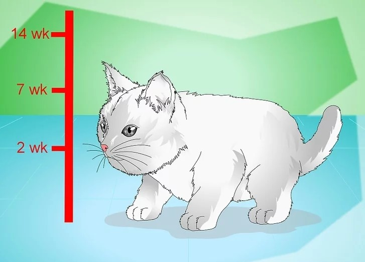
1. Learn About Kitten Development
Kittens go through specific phases of development. Learning about these may help you figure out why your kitten is crying and the best way to console it. The stages of a kitten’s development are:
- Birth to 2 weeks: the kitten orients towards sound and its eyes open, separation from its mother or littermates may lead to behavioral issues.
- 2 to 7 weeks: your kitten begins socializing and playing and may wean at around 6 to 7 weeks, though it may continue to suckle for comfort.
- 7 to 14 weeks: your kitten increasingly socializes and increases its physical coordination. Kittens shouldn’t be separated from their mothers or littermates before 12 weeks to minimize the risk of developing problematic behaviors. In addition, kittens who are gently handled for 15 to 40 minutes daily for their first 7 weeks are more likely to develop larger brains.
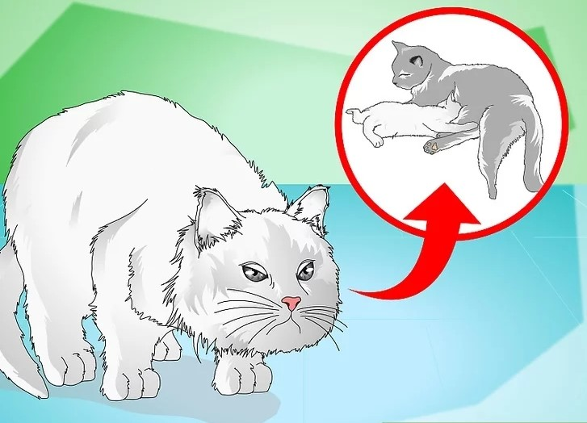
2. Identify The Causes Of Kittens Crying
Kittens may cry for a lot of different reasons, from being separated too early to being hungry. Recognizing the reasons for why kittens cry may help you identify their specific cries and give them the comfort they need. Your kitten might cry because:
- It’s been separated from her mother or littermates too early.
- It wants comfort or attention.
- It is hungry.
- It is cold.
- It has a disease that can cause her to feel unusually hungry or restless.
- It has to go to the bathroom.
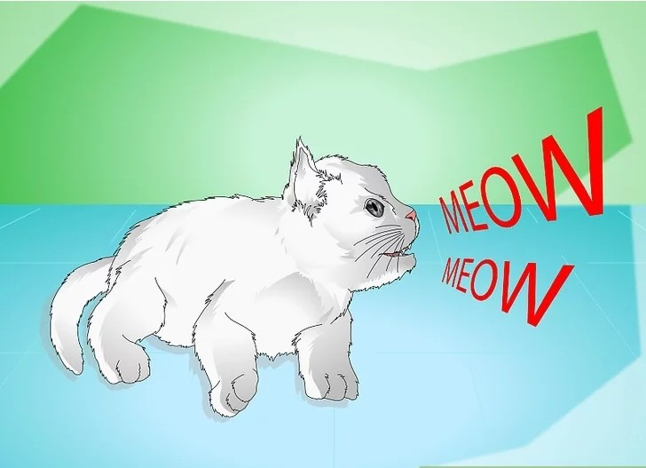
3. Recognize That Kittens Meow And Cry
Although you might find that your kitten is crying or mewing too much, it may just be expressing itself. Recognizing that all kittens and cats meow as a normal part of their behavior may help you get used to them crying on occasion.
- Determine for yourself when the crying is excessive or because of a need and to if you need to stop it.
- Be aware that some cat breeds, such as Siamese, are more prone to a lot of meowing.
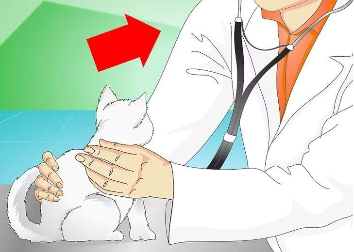
4. Visit Vour Vet
If you’re not sure about what is causing your kitten’s crying or you’re worried about its health, schedule an appointment with your vet. She can help figure out why your kitten is crying and suggest the best way to get it to stop.
- Tell your vet when the meowing started and if anything helps or makes it worse. Consider telling your vet how long your kitten was with its mother and littermates.
- Bring your kitten’s medical records with you if you have them.
- Answer any questions your vet has honestly so that your kitten gets the treatment it may need.
Giving Your Kitten Comfort
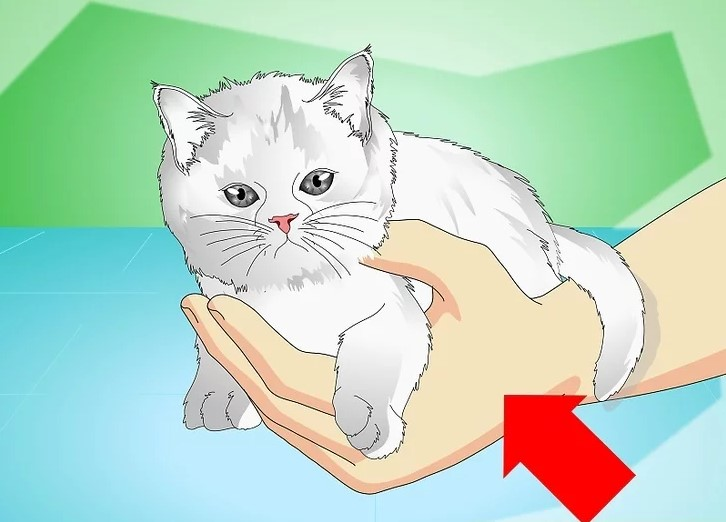
1. Hold Your Kitten
Most kittens like the comfort of being held and stroked by their human parent. It can mimic the comfort its mother gives and has the benefit of socializing it and helping it develop optimally.
- Handle your kitten gently. Pick it up using both hands so that it is supported and won’t fall.
- Avoid picking it up by the neck to minimize the risk of injuring it.
- Hold your kitten in your arm like a baby-it may not want to be on its back, but can also lie in your arm by snuggling its nose into the crook of your elbow.
- Put a blanket in your arm for your kitten to snuggle into. Avoid putting a blanket over your kitten, which might scare it.
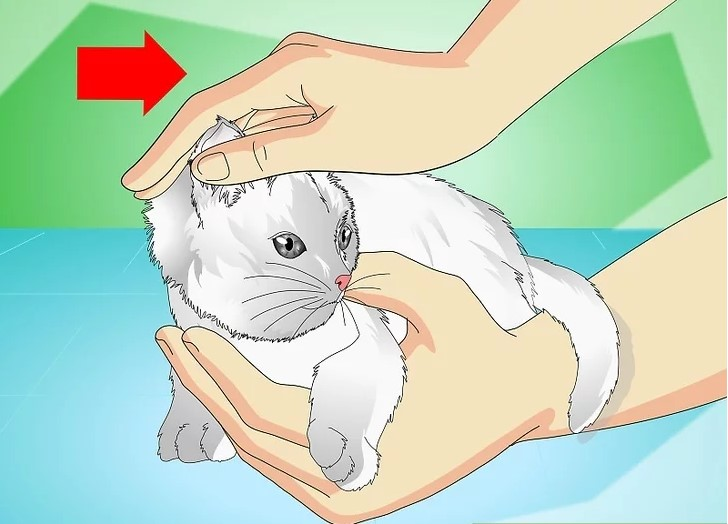
2. Stroke Your Kitten Gently
Either when you pick it up or if it is next to you, stroke or pet your kitten gently. This may calm it and stop it from crying and can help form a strong bond between you.
- Focus on petting your kitten’s head and neck and under its chin. Avoid your kitten's tail and other sensitive areas.
- Make sure to not pet it with too much force.
- Brush your kitten twice a week or more often if it likes that.
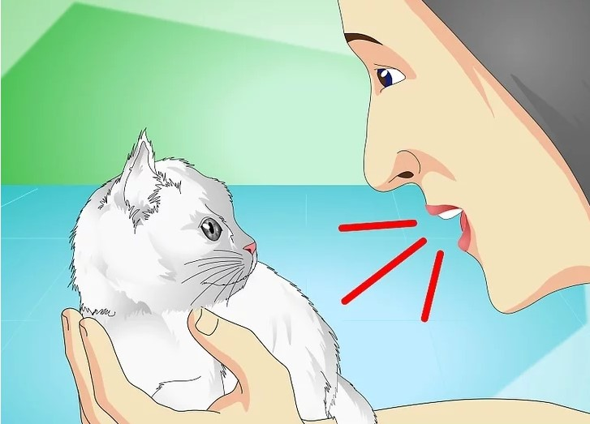
3. Talk To Your Kitten
Interaction is an important part of a kitten’s development and bonding experience with you. Talk to your kitten if it cries and whenever you interact with it, which lets it know that you’re communicating with it, too.
- Talk to your kitten when you pet and hold it, or feed it, or whenever it approaches you.
- Keep your tone soft and don’t yell, which can scare it.
- Say things that include its name and praise your kitten. For example, “do you want me to pick you up, Sam? Aw, you like that a lot don’t you? You’re such a good and sweet kitten.”
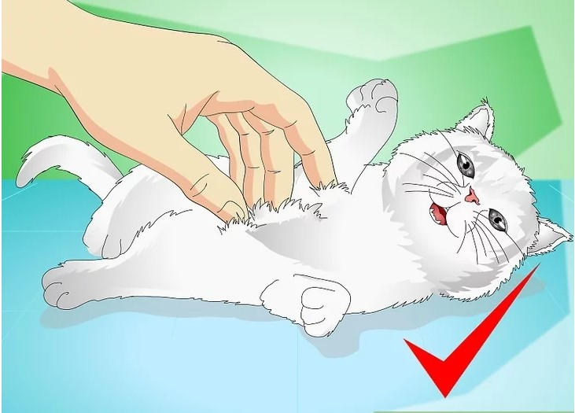
4. Play With Your Kitten
Play is another important part of a kitten’s development and bonding experience with you. Crying may signal that your kitten wants attention and playing is a good way to provide it.
- Have a supply of age-appropriate toys for your kitten, like balls and larger toy mice it can’t swallow. Keep a scratching pad on hand, too.
- Toss a ball back and forth to your kitten.
- Wrap a toy around a string and let her chase it. Make sure to watch your kitten and store the toy where it can’t reach it when you’re not playing. Kittens can eat strings which can cause major intestinal issues or even death.
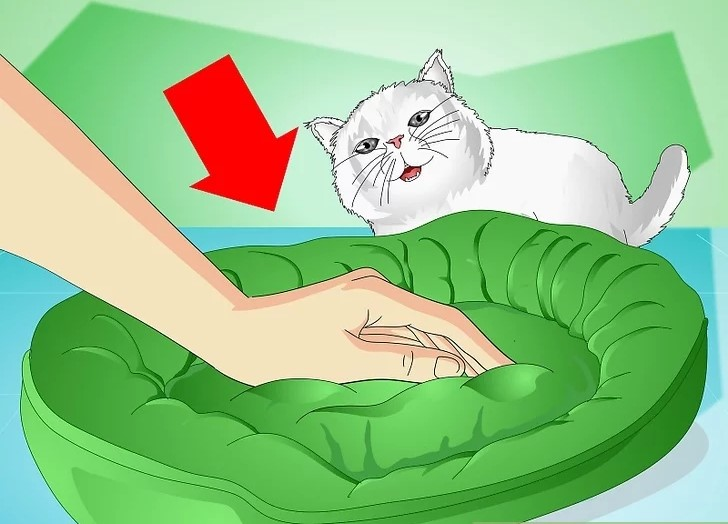
5. Make Your Kitten A Comfortable Bed
Giving your kitten a cozy place to sleep can help comfort and calm it, which could help with its crying. You can purchase a cat bed or line a box with a soft towel or blanket. Consider lining the bed with an item you’ve used like a sweatshirt or even blanket. This will help your kitten get used to your scent.
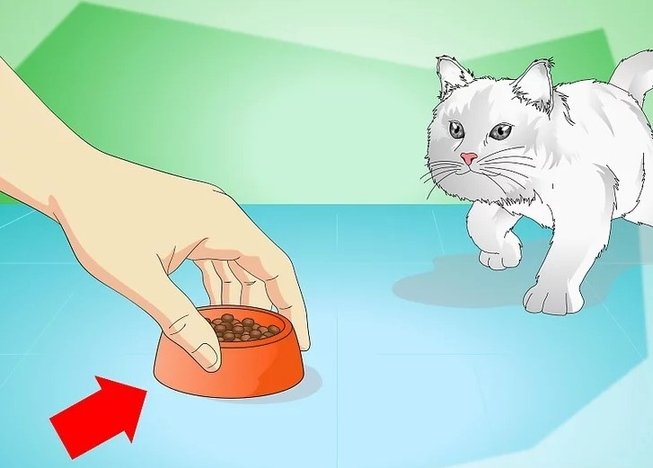
6. Feed Your Kitten
Kittens need nutritious food to support their growing bodies and promote their health. Giving your kitten enough to eat may help it to stop crying.
- Moisten your kitten’s canned food with milk replacer up to 10 weeks. It should be about the consistency of oatmeal. This is especially useful is it was weaned early or orphaned.
- Avoid regular milk because this might upset your kitten’s stomach.
- Put your kitten’s food in ceramic or metal bowls. Some kittens may be sensitive to plastic.
- Have a separate bowl of fresh water available for your kitten.
- Make sure your kitten’s food and water are fresh and that the bowls are clean.
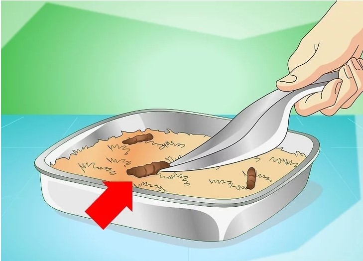
7. Clean Your Kitten's Litter Box
Cats and kittens are very sensitive about cleanliness, especially of their litter boxes. Keep your kitten’s litter box clean and available to it, which may also stop your kitten from crying.
- Make sure the litter box is small enough so that your kitten can easily get in and out of it.
- Use low-dust unscented litter.
- Scoop any material out as soon as you can. Do it daily to encourage your kitten to use it.
- Place the litter box away from your kitten's food. Kittens don’t like their food near their litter.
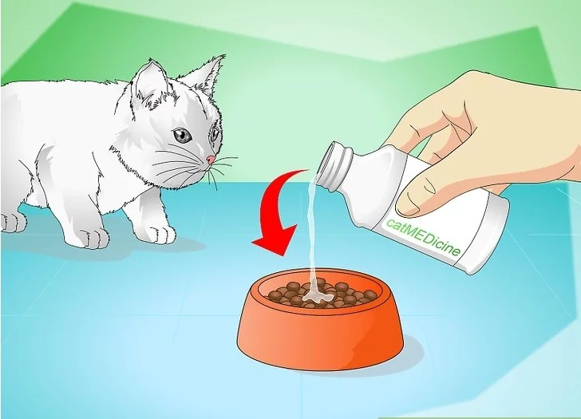
8. Give Your Kitten Its Medication
If your vet determines that your kitten is crying because it is sick, give your kitten any medications and treatments your vet prescribed. These can help your kitten heal and may stop excessive crying or meowing.
- Make sure your kitten gets its full course of medication.
- Ask you vet any questions you have about administering the medication with as little trauma to your kitten as possible
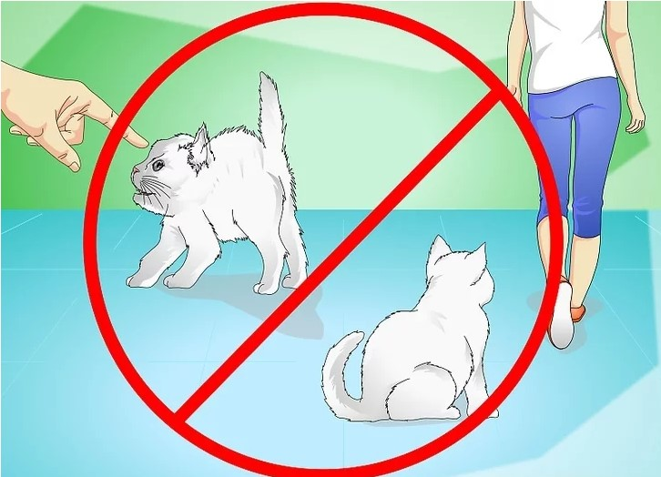
9. Avoid Ignoring Or Scolding Your Kitten
Unless you know for certain that your kitten wants something from you it can’t have, avoid ignoring its needs. Your kitten may not have access to its litter or may be out of water. Likewise, don’t scold your kitten for crying too much. It is not only not likely to stop it from crying, but may make it fear you.